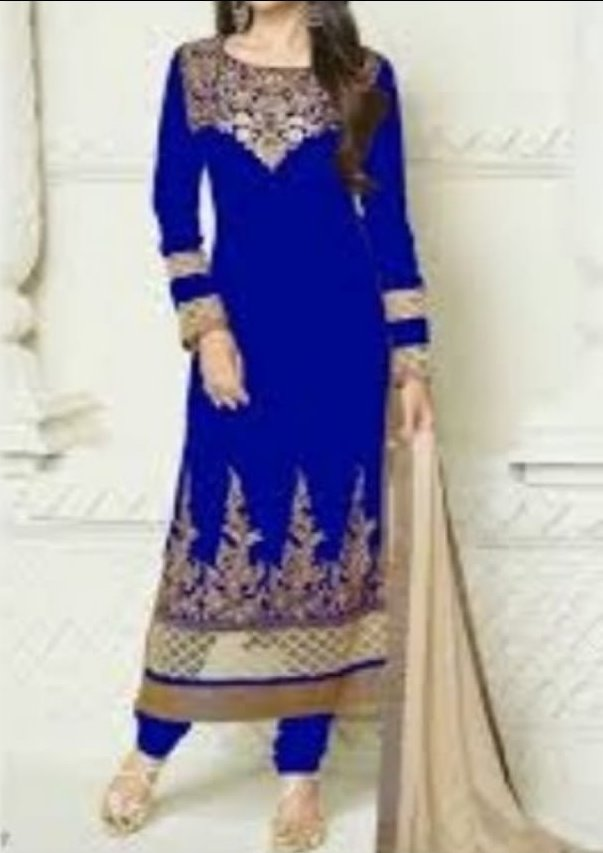

Armaan just arrived at the LANDON CITY AIRPORT, he came to Landon for a new english single.
As he stepped out of airport everyone crowded him, as armaan is a global star & he has fans across world.
Everyone was shouting armaan look here, armaan autograph please, armaan this armaan that and armaan armaan & armaannnn......
Suddenly he saw👀 a girl who just stepped out of car...
She was looking simple🙂, innocent😌 & beautiful😍.
She was not at all mad😍 for him like others. She even haven't look that side😒
AM:- (in mind💭) She must be an Indian girl.
(As she has wore a royal blue color salwar suit & matching diamond earrings. Her hairs are open. Whereas others are in modern dresses)

Hairs are black-n-brown, long & wavey. Her eyes are so deep like having so many secrets in it. Lips are rose pink & looks so soft like that of baby.
Armaan was continuously staring her & has no sense for a while😳. Suddenly a fan tap on his shoulder saying (armaan please look here) again n again & he came back to sense.
All his fans go after talking a little more to him. Some got hugs too🤗. Armaan was so happy. After that he again looked👀 at her, she was waiting for someone👤 & also she seems a little bit tensed😣 too.
Looking her tensed he became a little sad & was like why she is tensed. It looks bad on her face.
Armaan walked towards her, she saw him coming but not reacted anything like OMG... Wait! What, I can't believe etc(Like us😝). Because she don't know him
While he was walking towards herAM:- (in mind) Who she is, how I start talking to her😳, I guess she don't know who m I, Did she know me by my name only & haven't seen face ever🤷🏻♀️, what if she will go away without talking😱.... And so many more questions.
In short our flirting boy is nervous & confuse. After all he don't want to make his first meeting with her worst.
At the same time
S:- (thinking) who is that guy coming towards me🧐 & who he is... why everyone crowded him? Is he a celebrity🤵...!
Armaan came and stand on her side & tap her left shoulder... she don't turn, Armaan again tap her shoulder & said...AM:- Excuse me! Can u please tell me this address...?
SH:- (with a little smile🙂) sure(also asked him) “ Are you from India...?”
AM:- Yesss😀 I'm from India😁. How you know that😯!
SH:- Because you look soo...
AM:- Are you too from India?
SH:- Yeah I'm also Indian.
Shravya suddenly realized that she was waiting for someone & again start looking towards the exit & even forgot to tell him her name & even address too.
AM:- You are looking tensed😥 can I help you?
S:- No... Thanks for asking☺. I'm just looking for someone.
(After heraring that he thought that what if she is waiting for her boyfriend?...No that's not possible she seems so simple for all this kind of things...
What if she was waiting for her husband...! But if she belongs to hindu religion she must have atleast mangalsutra in her neck, so that also not possible but what if its true...
So is she waiting for her fiance... what is this thought of mine is true? Or maybe she is just waiting for her family or friends.
Sould I ask her? .....His heart reaplied just ask her.
Listening to his heart he take a little deep breath & asked her.....)
AM:- If you don't mind can ask you a question?
S:- Yes you can.... I'll not.
AM:- Mmmm whom you are waiting for?(his heart started beating so fast, thinking that what if his doubt is true?)
S:- (Tells in a soft tone)Well I'm waiting for someone I'm going to meet after years. I love him the most(Listening the word him his heart skiped a beat)....
(Tells a bit angerily)but first of all when he comes, I'll scold him so much... No it's better that not to talk with him when he comes, (Tells in a soft but confusion tone)but I can't he is my
love(same time his heart skipped two beats & almost had a herat break, but, shravi add immediatly), he is my brother & he(AM) was like thank god and released a deep breath.
AM:- Ohh! Ok. Where he is coming from?
S:- India... But he is not arrived yet, I'm getting worried.
At HomeSDA:- (To SM) Shravi aur Anmol kaha hai... Ye log abhi tak ghar kyu nhi aaye?
SM:- Papa mujhe bhi nhi pata
SDA:- Meri Raghu se baat kervao
(As Shravi don't want phone📱. As she thinks that it spoils beautifull moments & time.
Although she has a simple old phone but...)
At airportPhone rangs....D(driver):- Parnam dadaji.
SDA:- Why you are not home yet, we are getting worried for them😥.
D:- Sorry dadaji😔 but anmol baba haven't arrived yet. Shavi baby is also getting worried for baba.
SDA:- Ooh! no need to say sorry, its not your fault, if he is not arrived yet.
Well please give phone to shravi...
D:- Yes dadaji...
At the same time while driver was talking to dadajiAM:- (to S) Stop worrying😥 its simple just call him & ask where he is?
S:- Yeah I know baa...
(The D comes out & says...)
D:- Shravi baby (giving phone to her🤳) dadaji...
S:- (Taking the phone) Pranam dadaji.
SDA:- (In a tensed tone)Khush raho beta.
Before her dadaji ask anything...S:- Kya hua dadu ghar pe sab thik hai naa. Aapki aavaz se lagta hai aap pareshaan hoo.
SDA:- Haa beta ghar per sab thik hai. Vo tum ghar nhi aaye naa issliye sab thoda pareshaan hai.
S:- Haa dadu mai bhi usko leke pareshaan hoo rahi hu.
SDA:- Beta tu ek kaam ker kisi se phone leke anmol ko call ker lee.
S:- Ji dadu! Mai unse baat ker ke aapko phir call krti hu😞...Namaste.
SDA:- Thik hai beta.
S:- (before dadu ends the call) Acha dadu...
SDA:- Haa shravi beta...
S:- Bhai jo airlines se aane vale the uski details do naa😶...
SDA:- Thik hai. Per kyu🤨?
S:- Vo bhai ko call naa lage to koi hindustani dikhe gaa usse puch lugi yaa airport pe pata ker lugi issliye. Agar aapki ijazat hoo to🙁.
SDA:- Thik hai
Dadu give details & end the call.
AM:- Itni hindi😯. Koi english sorry sorry angrezi(अंग्रेजी) shabd hii nahi😅(in mind oh no agar use bura lag gaya toh😕)
S:-(Looked towards him and gives a little smile) Haa voh dadu ke sath & unke samne aise hii baat kerni padti hai. In hindi no english, just some commom words only.
AM:- Thank god. Mujhe laga ki aap...
S:- Aap wht bura lagega...? Yehi naa...!
AM:- Yess. Aapko kaise pata?
S:- Voh aapka face dekhke laga...
AM:- Well aapke pass mobile nhi hai?
S:- Hai but voh repairing mein diya hai.
AM:- Ohh! Okay.
S:- Kay mai aapke mobile se call ker sakti hu.
AM:- Yesss😃. But...(before armaan say anything shravi asked)
S:- But... But wht...!?
AM:- Relax baba, I'm just saying that but you have to told me your name?
S:- Ohhh🙂...! My name is shravya, you can call me shravi. Sab mujhe pyaar se yeh hii kehte hai😁.
AM:- Ohk! Now you can call “shra-viii"
S:- Takes the phone & called Anmol.
An:- Hello. Who's this?
S:- Who's this ke bache😤 kaha hai tu.
An:- Who are you & Why are you scolding me?
S:- Mein kon hu😠... I'm your sister shravi idiot😤
An:- Oooo! Sorry shravi dii.
S:- Sorry😡.... what sorry you know ghar pe sab kitna pareshan hoo rahe hai hum dono ke liye.
An:- Dii i know but main kya keru flight thoda delay hogyi thi issliye & maine aapko msg kiya tho tha.
S:- Areee mujhe kyu msg kiya, mera phone toh repairing main hai😩. Ghar pe call kedeta toh kya hojata 😒
An:- Haa voh but main...
S:- Chod voh sab. Yeh bata tu abhi kaha hai? Main kabse baahar tera wait ker rahi hu.
An:- But dii aapne pehna kya hai because you know naa....
S:- Maine royal blue color ka salwaar suit pehna hai.
An:- Ok dii aata hu.
S:- Thik hai jaldi se aa jaa.
S:- (End the call) Thanks😊.
AM:- My pleasure to help you.
S:- I don't know aap na mile hote toh me kisko help ke liye puchti & insab sab baato me mein aapka naam puchna bhi bhul gayi.
AM:- My name is Armaan.
S:- Yaani quaishe, aashae.
AM:- Yup😁 & aap ke name ka meaning agar me galat nhi hu toh music se related hai, hai naa?
S:- Haa, mere name ka meaning a sweet musical tone hai.
An:- Excuse me! Shravya.
S:- Yess.... Aap kon?
An:- Dii mein anmol.
S:- Pagal ghar pe ek call nhi ker sakta tha, hum sab kitna tensed the pata hai. Jaa me tujhse baat hi nhi kerugi😤.
An:- Sorry dii, mujhe thodi pata tha aapka phone repairing me hai.
S:- Haa teri baat bhi sahi hai😕. But mera reply nhi aaya tha toh ghar pe call kerke bol du aisa nhi hua tujhe😒
An:- Dii ghar pe chal ke jitna daat lena ho daat lena. Abhi toh mujhe bhaut bhuk lagi hai.
S:- Acha beta, ghar chalke tujhe mai nahi dadu daat lagayege. Aur haa jaldi chal varna mujhe bhi daat pad jayegi.
An:- Ok dii...
S:- Bye thanks for help.
AM:- No need to say thanks. Uske badle mujhe aap address bata dege please? It will be like help ke badle help
S:- Ohh...! Sorry me bhul hi gayi aapko address batana.
Armaan gaved her the address.(Anmol was thinking🤔💭 I guess I know him)
S:- Oooo toh aapko mere dadu se milna hai.
AM:- ohh! What a great coincidence😅. Same destination.
S:- Yesss.
AM:- Toh aap chaliye me apki car ko folloW ker luga.
S:- Aap bhi humare sath aa jaye. Jab same destination hai toh petrol kyu waste kerna & pollution badhana.
AM:- I guess you are right, but aise aapke sath. Aapke bhai ko yaa family me kisi ko koi problem toh nhi hogi naa but...
S:- Anmol ko bhala kyu problem hogi. Haina anmol? And rahi baat ghar pe sabki toh unko bhi nhi hogi.
An:- Haa dii, but who he is...?
S:- Jinke phone se tujhe call kiya tha naa voo. Armaan he is my brother jisko leke me tension le rahi thi Anmol & Anmol he is Armaan, he helped me.
An:- Hi, thanks for helping her.
AM:- please don't say thanks. Anyone does this kind of little helps.